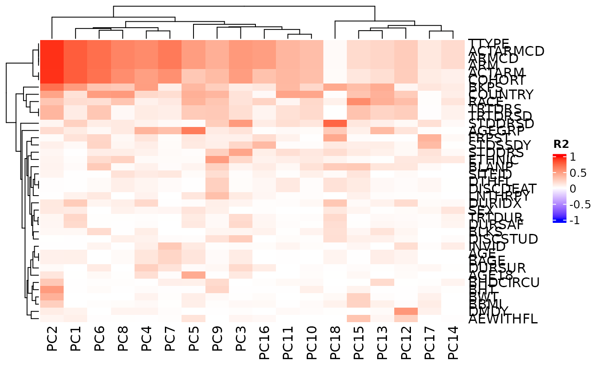
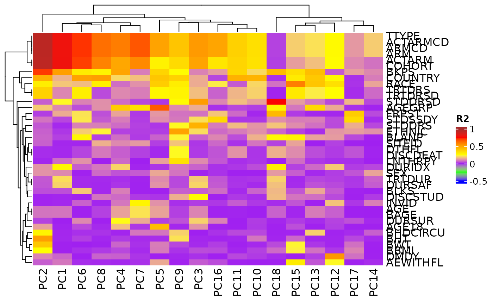
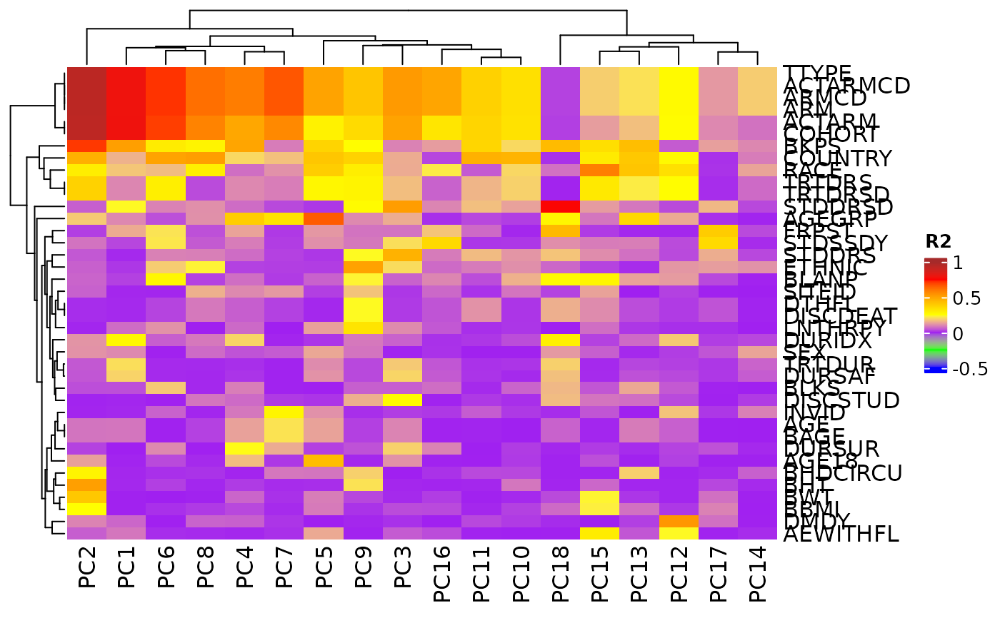

Correlation of Principal Components with Sample Variables
Source:R/pca_cor_samplevar.R
pca_cor_samplevar.Rd![[Stable]](figures/lifecycle-stable.svg)
This correlate() method analyses the correlations (in R2 values) between all sample variables
in a AnyHermesData object and the principal components of the samples.
A corresponding autoplot() method then can visualize the results in a heatmap.
Usage
# S4 method for class 'HermesDataPca'
correlate(object, data)
# S4 method for class 'HermesDataPcaCor'
autoplot(
object,
cor_colors = circlize::colorRamp2(c(-1, 0, 1), c("blue", "white", "red")),
...
)Arguments
- object
(
HermesDataPca)
input. It can be generated usingcalc_pca()function onAnyHermesData.- data
(
AnyHermesData)
input that was used originally for the PCA.- cor_colors
(
function)
color scale function for the correlation values in the heatmap, produced bycirclize::colorRamp2().- ...
other arguments to be passed to
ComplexHeatmap::Heatmap().
Functions
autoplot(HermesDataPcaCor): This plot method uses theComplexHeatmap::Heatmap()function to visualize aHermesDataPcaCorobject.
See also
h_pca_df_r2_matrix() which is used internally for the details.
Examples
object <- hermes_data %>%
add_quality_flags() %>%
filter() %>%
normalize()
# Perform PCA and then correlate the prinicipal components with the sample variables.
object_pca <- calc_pca(object)
result <- correlate(object_pca, object)
# Visualize the correlations in a heatmap.
autoplot(result)

# We can also choose to not reorder the columns.
autoplot(result, cluster_columns = FALSE)
 # We can also choose break-points for color customization.
autoplot(
result,
cor_colors = circlize::colorRamp2(
c(-0.5, -0.25, 0, 0.25, 0.5, 0.75, 1),
c("blue", "green", "purple", "yellow", "orange", "red", "brown")
)
)

# We can also choose break-points for color customization.
autoplot(
result,
cor_colors = circlize::colorRamp2(
c(-0.5, -0.25, 0, 0.25, 0.5, 0.75, 1),
c("blue", "green", "purple", "yellow", "orange", "red", "brown")
)
)
